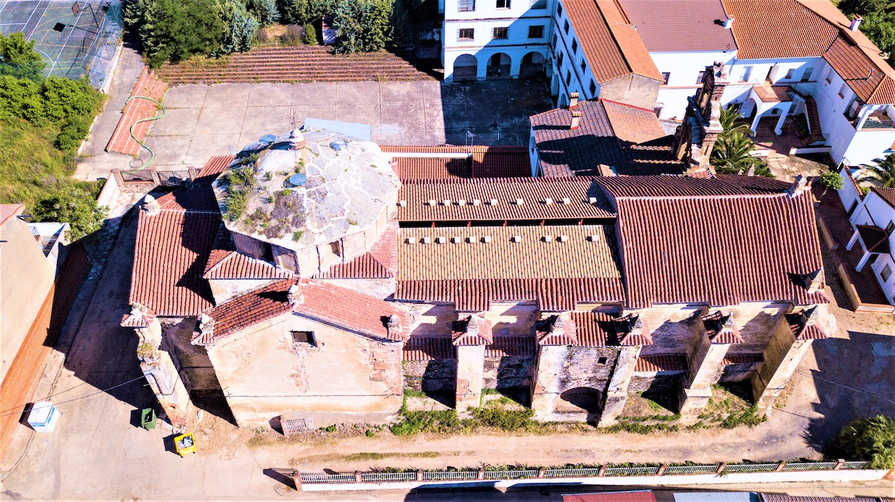
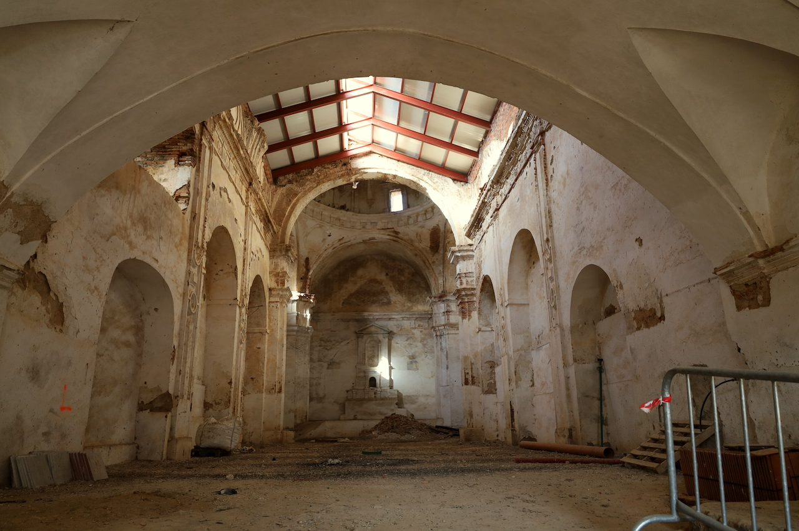
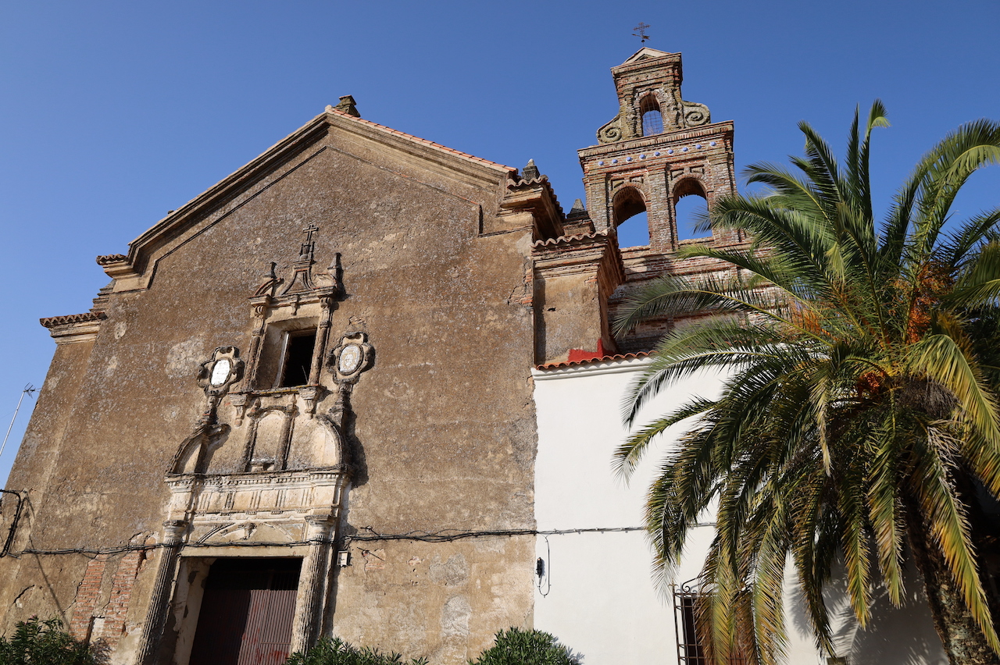
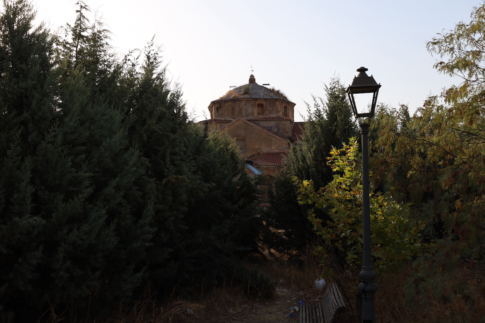
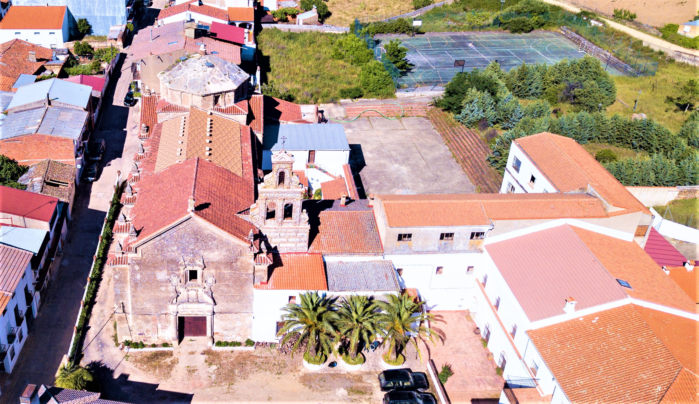

Convento de la Purísima Concepción
Un remanso de paz y espiritualidad en el corazón de la villa.
El Convento de la Purísima Concepción de Herrera del Duque es uno de los enclaves más emblemáticos y serenos de la localidad. Fundado en la Edad Moderna, este convento ha sido durante siglos un espacio dedicado a la vida religiosa, el recogimiento y la contemplación.
Está construido con mampostería de piedra de la zona (pizarra y granito de La Siberia), ladrillo macizo y mortero de cal, con muros gruesos y pocos vanos que favorecen el aislamiento interior. Las cubiertas son de teja árabe sobre vigas de madera, y los suelos de losas de barro cocido o piedra. Todo ello le confiere una sobriedad que refleja la esencia de la espiritualidad que lo define. Cada rincón transmite sencillez y equilibrio, en armonía con el estilo de vida de quienes habitaron y dieron sentido a este lugar.
La fundación del convento fue posible gracias a religiosas de la Orden de la Inmaculada Concepción (Concepcionistas Franciscanas), con el impulso de donantes locales and familias nobles de Herrera del Duque. Fue levantado por canteros y maestros de obra de la propia comarca, a menudo con limosnas y legados testamentarios de vecinos que buscaban asegurar su salvación espiritual. En sus celdas y claustros vivieron monjas de clausura, mujeres que profesaban votos de pobreza, castidad y obediencia, procedentes de Herrera del Duque y pueblos cercanos. Junto a ellas, las hermanas legas o donadas se encargaban de las tareas domésticas, la huerta y la cocina, formando una comunidad que en sus momentos de mayor esplendor pudo reunir entre quince y treinta religiosas.
Más allá de la oración y el rezo del oficio divino —siete veces al día—, el convento tuvo usos muy concretos: aquí se elaboraban dulces de convento como pestiños, mantecados o yemas; también bordados litúrgicos y hostias para la iglesia local. Contaba con una huerta de autoconsumo, un locutorio con reja para las escasas visitas familiares, y una iglesia donde las familias fundadoras enterraban a sus difuntos en criptas o bajo el suelo de piedra. Cada rincón, cada muro, guarda así historias silenciosas, marcadas por la oración, la rutina, la trabajo manual y la conexión interior.
Más allá de su valor histórico, el convento destaca por la atmósfera de calma que lo envuelve. Sus muros guardan historias silenciosas, marcadas por la oración, la rutina y la conexión interior, formando parte del patrimonio cultural y emocional de Herrera del Duque.
Galería de fotos




